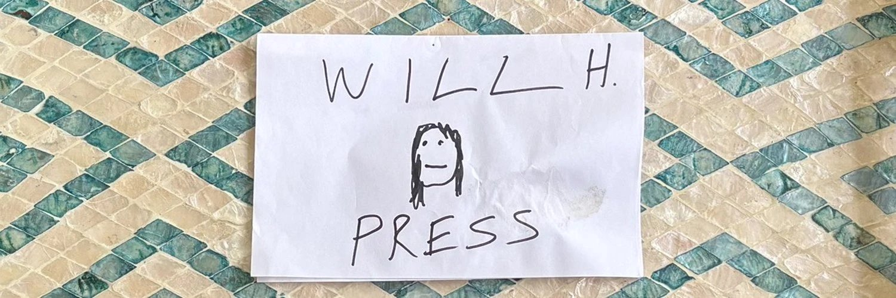

hello!
Will Hofmann
Reporting fellow covering politics and campaigns
about
I previously worked at the Asheville Citizen Times, where I covered Western North Carolina’s recovery from Hurricane Helene and regional growth and development. I graduated from Appalachian State University, where I covered politics, infrastructure and enterprise projects as an editor for The Appalachian.
clips
- This Candidate Is Stuck in Capitol Hill Limbo
- Republicans Want Their State Parties Overhauled After Midterm Losses
- D.C.’s Foie Gras Fight Might Just Be Getting Started
- D.C. Votes to Ban Foie Gras in a Win for Animal Rights Activists
- Commanders Fans Locked Inside Metro Station After Sunday Night Win
- Natural Gas Will Be Used at RFK Stadium — Just for Cooking and Heating
- How Rough Is It for Republicans? Look at This North Carolina District.
- How Metro Turned L’Enfant Plaza Into a ‘Laboratory’
contact me
You can reach me at willhofmann@washsun.com.
Signal: will_hofmann.01